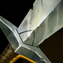
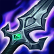
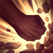
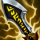

起手裝備

長劍提高前期普攻、1 技與拔矛傷害。
Kalista · 跳躍走砍／多目標疊矛型射手
每一下普攻都要同時想下一個落點。不要只往後跳，利用左右橫移躲直線技能；3 技最好同時在兵線與英雄身上有矛，先拔死小兵刷新冷卻，再繼續疊英雄。
本站當時評級理由：克黎思妲在單線團戰能靠被動連續跳躍躲技能，3 技在多人身上疊矛後一次拔出具有很強收割能力，大絕還能救隊友或讓前排二次開戰。她的弱點是非常怕減速與點控，且 ARAM 地形窄，跳錯一步就可能進到控制區。
近期官方未列克黎思妲標準 ARAM 專屬百分比修正，本站維持 100%／100%。6.1f 的角色調整提高基礎攻擊、成長攻擊與生命，並調整好戰突進的攻速換位移效率。

提高前期普攻、1 技與拔矛傷害。

攻速、吸血與當前生命傷害，是前排多的 ARAM 最穩第一件。
放大攻速與命中特效，快速堆高長矛層數。

多人站位密集時同時在多個目標上疊矛，團戰收益極高。
補魔抗、攻速與額外魔法傷害，提高對法師陣容的生存。

後期射手被碰到就危險，雙抗讓走砍容錯更高。
攻速直接影響走砍流暢度與疊矛速度。
三級鞋補輸出與機動。

持續普攻很快疊滿攻速，最契合跳躍走砍。

提高前中期普攻與 1 技壓力。

對高生命前排有穩定收益。
進一步提高攻速與拔矛累積效率。

被刺客貼臉時降低第一輪爆發。

修正跳躍位置或躲必中控制。

射手被強開時最直接的保命工具。
3 技 > 1 技 > 2 技
ARAM 開局三個基礎技能各點 1 級，之後主升 3 技、次升 1 技；大絕能點就點。
用兵線當 3 技刷新媒介，普攻英雄時同時在殘血兵上留矛，拔矛收兵就能刷新並繼續壓人。
殞落＋鬼索後輸出成形。芮蘭出來後不要急著拔矛，等多個目標都累積到足夠層數再一次收割。
站位比輸出更重要。大絕可救被抓的血誓同盟，也可讓坦克二次擊飛；自己不要因為被動能跳就往敵方五人中央移動。
替換雅瑪蘭，提供一次復活容錯。
 蘭頓之兆
蘭頓之兆替換智慧末刃，專門降低暴擊壓力。

致死宣告替換一件防裝或智慧末刃，處理高治療陣容。
獨立歷史資料：7.2b 分類評級。7.3a 僅有部分增幅公告欄位校正，英雄分類適配與出裝未因此全面重評；不套用到標準 ARAM。
看遊戲卡片下方分類 → 點相同分類 → 看左側 S+／S／A。
所有輸出都建立在高頻普攻疊矛上，命中特效型增幅可以穩定吃滿。
被動讓幾乎每次普攻都伴隨位移，身法類增幅觸發頻率極高。
攻速、射程與多次普攻能直接提高疊矛與拔矛收割效率。
跑速與滑步一起決定她能不能保持安全輸出距離。
三技能拔矛與大絕救援都很重要，技能循環有明顯單卡價值。
普攻縮技能、技能普攻循環與保命類增幅能強化長團收割。
v80.12.0 ARAM A 第三批：克黎思妲採 7.2a 當前殞落／鬼索／芮蘭核心；標準 ARAM 未套用 AAA ARAM 專屬數值。｜v93 7.2d 標準 ARAM 全量校正：已複核 Tier、標準 ARAM 模式修正、7.2c／7.2d 英雄與道具、現行符文名稱及雪球戰車；無額外異動者沿用已驗證配置。